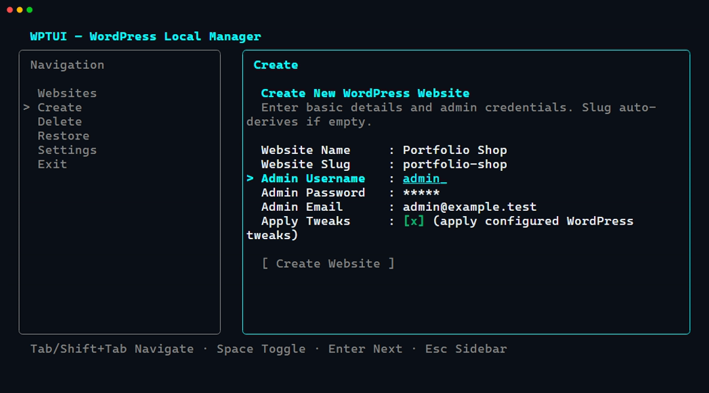

Provisioning
Create local Websites with validated inputs
WPTUI creates the MySQL database, installs WordPress core, registers a local .test domain in Laravel Herd, Flock, or Laragon, applies WordPress tweaks, and installs API-driven Packages.
